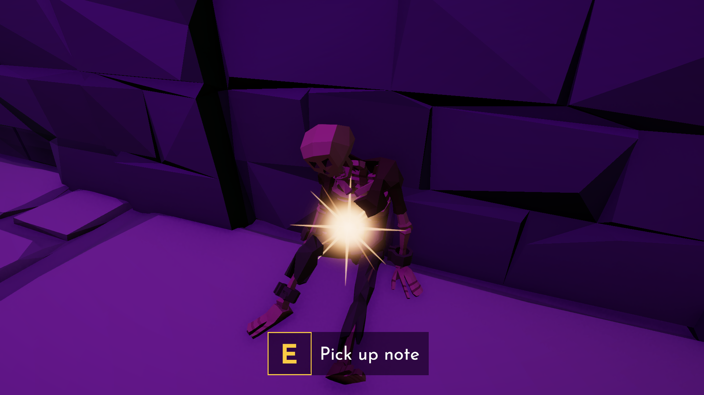
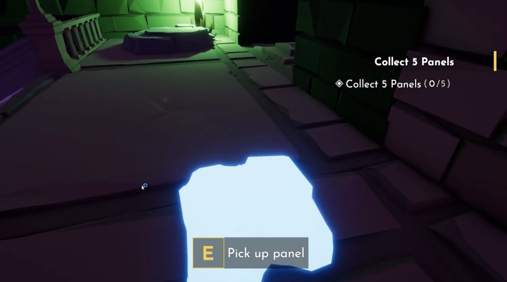
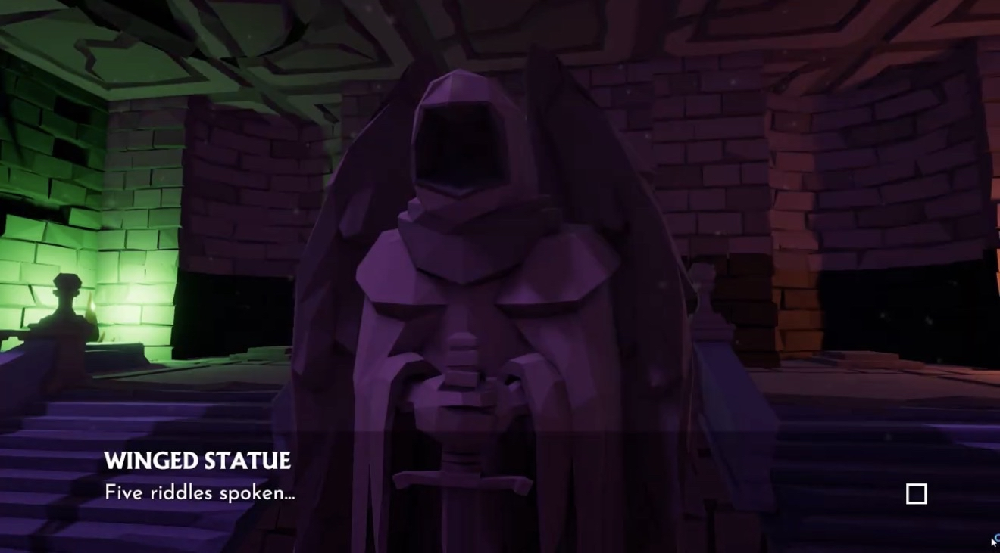
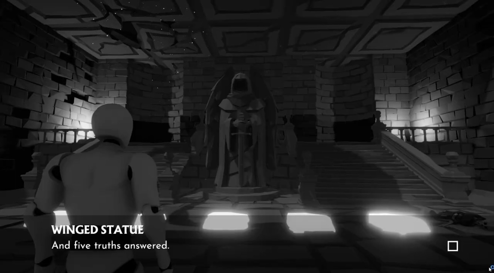
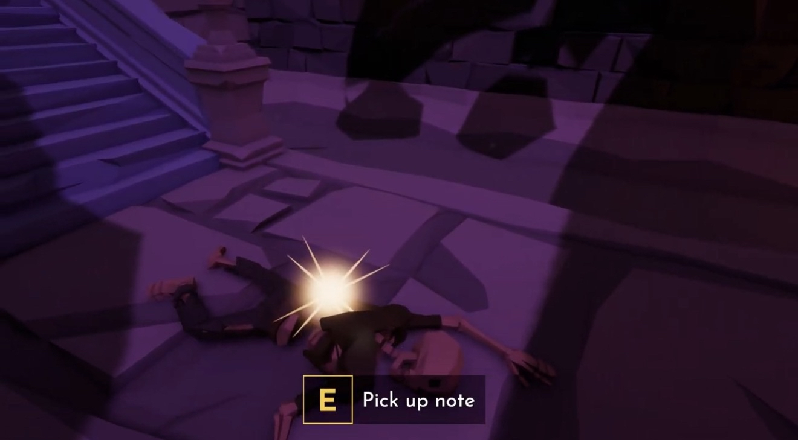
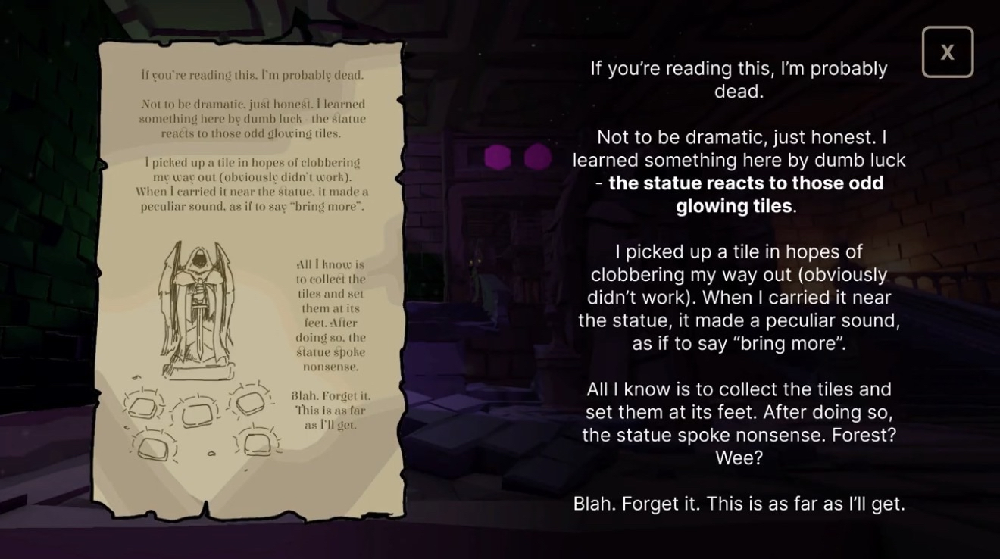
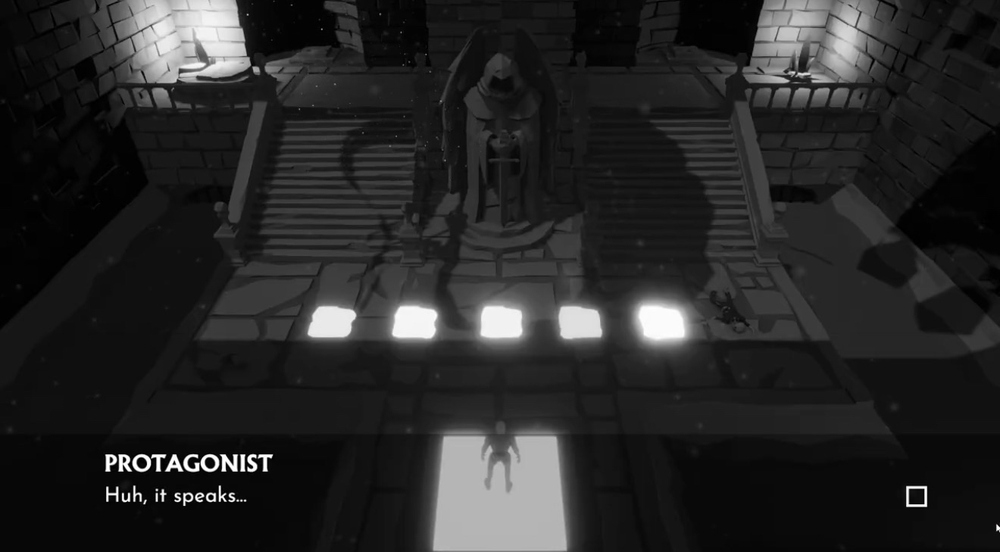

Overview
Stonespoke is designed to feel like arriving *after* something happened. Instead of explaining the world outright, the environment and small discoveries do the storytelling. The primary puzzle language is spoken clues: the statue’s riddle references objects/emotions/imagery associated with colors, and the player translates that into an ordered path.
Make puzzles feel like story
The “solution” is understanding, not just memorization—players learn by interpreting meaning.
Environmental breadcrumbs
Small set dressing + implied events help players form a theory about where they are.
Confidence moment
The best feeling is: “Ohhhh—THAT’s what it meant,” right before stepping the final panel.
A puzzle should read like a conversation—listen, infer, act, and feel smart for connecting the dots.
Core Loop
The loop stays simple so the puzzle language can be the star.
Arrive & read the space
Players notice oddities, traces, and “why is this here?” details before any exposition.
Listen to the statue
A spoken riddle hints at a sequence using associations (heat, ocean, storm, gold, etc.).
Commit to an order
Step on panels in your interpreted color sequence. Feedback confirms progress without spoilers.


Key Systems
The “systems” here are mostly *communication systems*—how we teach the player without menus.
Riddle → color associations
- Each line references something strongly tied to a color (e.g., “ocean” → blue).
- Players translate meaning into a sequence (not literal “press blue”).
- Clues can be layered: obvious reads + clever alternate interpretations.
Story in the silence
- Objects and layout suggest what happened *before* you arrived.
- Optional details reward curiosity without blocking main progress.
- Every “why is this here?” moment doubles as tone-setting.
Readable confirmation
Wrong steps communicate “not that” without punishing the player (sound, light, reset rules).
Natural ramp
Start with clear associations, then introduce ambiguous or multi-step metaphors.
Short loops
Listen → try → learn repeats quickly so players stay in the vibe.
Collaboration
I built this with a friend—small scope, quick iteration, and clear division of responsibilities.
- Puzzle structure + riddle writing (color association logic).
- Level beats / pacing (where the player encounters story vs puzzle).
- Playtest notes & iteration passes (clarity, fairness, readability).
Edit these bullets to match your exact contributions.
- Environment build / art pass (set dressing, mood, lighting).
- Implementation support (triggers, panel logic, audio cues).
- Polish (UI-free feedback, small VFX, iteration tweaks).
Edit these bullets to match your teammate’s role.
Inspiration
The core “spoken clue → step colors” idea is inspired by a Ratchet & Clank-style riddle puzzle where clues point to colors and you step them in order to “mix” the correct result. [oai_citation:0‡Ratchet & Clank Wiki](https://ratchetandclank.fandom.com/wiki/Search_for_Clues?utm_source=chatgpt.com)
I kept the “interpret the riddle” satisfaction, but tuned Stonespoke’s clues to fit a quieter tone and made environmental context part of the solve (not just the riddle alone).
Media Gallery
Slots for screenshots, GIFs, and short clips. Swap GIFs to MP4 for performance.




